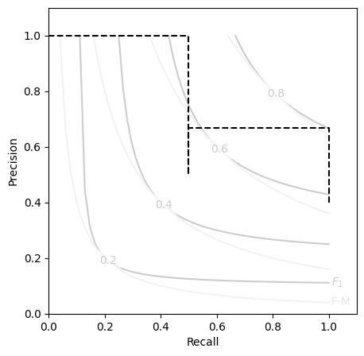

Tutorial¶
Binary classification metrics are all about testing the quality of your predicted labels against the actual labels you observed.
To start out, we will need example predictions (y_pred) and targets (y_true).
python imports & setup
Basic Instantiation¶
Now, just instantiate the Contingent dataclass with your true and predicted target values.
output
Contingent( y_true=array([[False, True, False, False, True]]), y_pred=array([[False, True, False, True, False]]), weights=None, TP=array([1]), FP=array([1]), FN=array([1]), TN=array([2]), PP=array([2]), PN=array([3]), P=array([2]), N=array([3]), PPV=masked_array(data=[0.5], mask=[False], fill_value=1e+20), NPV=masked_array(data=[0.6666666666666666], mask=[False], fill_value=1e+20), TPR=masked_array(data=[0.5], mask=[False], fill_value=1e+20), TNR=masked_array(data=[0.6666666666666666], mask=[False], fill_value=1e+20) )
We now have access to properties that will return useful metrics from these contingency counts, such as:
- Matthew's Correlation Coefficient (MCC)
- F1/F2 scores
- Fowlkes-Mallows (G) index
- and more (see the API)
[0.16667] [0.5] [0.5]
Contingencies from Probabilities¶
Most ML systems do not output binary classifications directly, but instead output probabilities or weights.
Thresholding these will create an entire "family" of predictions as the threshold increases or lowers.
Contingent easily handles this as a simple broadcasting operation, using numpy.
To access this functionality, produce a Contingent instance using the from_scalar() constructor with you scalar predictions:
M_batch = Contingent.from_scalar(y_true, y_prob)
print(M_batch.weights, M_batch.y_pred, sep='\n')
M_batch.y_pred.shape
[0 1e-05 0.21429 0.85714 0.99999 1] [[ True True True True True] [ True True True True True] [False True False True True] [False True False True False] [False True False False False] [False False False False False]]
(6, 5)
Note how the number of positives decreases as the threshold increases (downward, increasing with each row).
Likewise, we can see that the set of metrics is now vectorized as well, since each threshold implies a different set of TP,FP, FN, and TN counts:
[0 0 0.66667 0.16667 0.61237 0] [0.57143 0.57143 0.8 0.5 0.66667 0] [0.63246 0.63246 0.8165 0.5 0.70711 0]
Expected Values¶
We would like a single score that summarizes our classifier's performance across all thresholds.
This can traditionally be done using Average Precision Score (APS), which is the average precision weighted across the recall scores.
Alternatively, Contingent.expected can calculate the expected value of each provided score type across the set of unique threshold values.
0.8333333333333333
0.39492652768935094
0.6481253367346939
Optional Plotting Utilities¶
For those of us that are consistently performing threshold sensitivity analyses, a Precision-Recall (P-R) curve probably feels like an old friend.
Communicating these with respect to the aggregate scores like F and G can be tricky, so we've provided a simple template matplotlib.axes.Axes object.
You can access this template by importing the included plot utility PR_contour for making nicely formatted P-R curve axes to plot your Contingent metrics on.
from contingency.plots import PR_contour
M_batch.expected('aps')
plt.figure(figsize=(5,5))
PR_contour()
plt.step(M_batch.recall, M_batch.precision, color='k', ls='--', where='post')

Tip
While the Contingent class does not have a method to automatically plot its own P-R curves on a contour like this, such functionality is planned to be added at a later time.